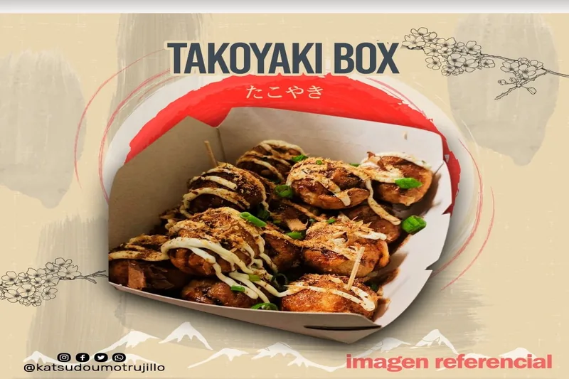

蛸

たこ焼きボックス・オリジナル
Takoyaki Box Original takoyaki bokkusu orijinaru外はカリカリ、中はとろとろ——大阪が誇るスナックの傑作。
出汁ベースの生地で包んだたこ焼き15個（メイラード反応で均一にカリカリな外皮）。かつどうも甘辛ソース、Kewpieマヨネーズ、荒節（6週間燻製・乾燥したIMP豊富な削り節）をのせたうまみ爆弾。仕上げに青ネギのフレッシュな香りを添えて。
S/25
注文する